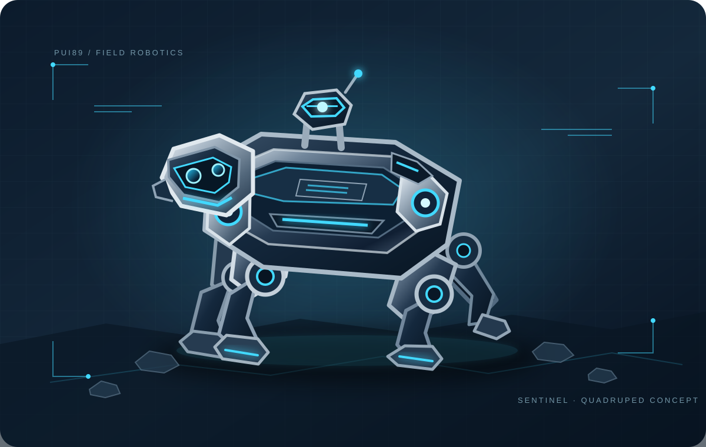

Reach difficult environments
A quadruped form is being explored for controlled access across selected indoor and outdoor surfaces where wheeled platforms may be less suitable.
A four-legged all-terrain inspection robot dog concept for authorised industrial facilities, infrastructure, warehouses, ports and selected outdoor environments. It is designed for supervised mobile inspection, observation and evidence capture.

Sentinel is a four-legged robot dog for supervised inspection of industrial facilities, infrastructure, warehouses, logistics yards, ports and selected outdoor environments. It is distinct from PUI89 NOMAD, which uses four wheels.
Safety boundary: “All-terrain” is a development ambition, not a guarantee. Deep water, unstable structures, hazardous atmospheres and unverified terrain are no-go conditions. Human oversight remains mandatory.
Physical prototype estimate: ฿1,225,000–฿2,990,000 for one engineering prototype. Preliminary planning estimate only—not a verified BOM, supplier quote, fixed budget or purchase approval. No prototype or validated field capability is claimed.
The project is at concept and software-workflow stage. No physical robot, validated locomotion, sensor integration, terrain performance, endurance or field deployment is claimed.
A quadruped form is being explored for controlled access across selected indoor and outdoor surfaces where wheeled platforms may be less suitable.
Support repeatable patrols, asset observation, environmental awareness, mapping and traceable evidence capture.
Operators define mission limits, supervise movement and review every consequential alert or action.
Explore scene understanding, object and asset observation, obstacle detection, terrain assessment, change/anomaly detection, sensor-health checks, uncertainty reporting and operator review. AI outputs remain advisory.
The proposed mobility direction is an **all-terrain, multi-environment quadruped** for indoor and outdoor inspection, with research targets including corridors, paved routes, gravel, grass, soil, moderate slopes, steps and selected uneven or rubble-like ground. Terrain access, traction, stability, payload, weather protection, endurance and safe interaction require separate engineering and validation; this does not mean the robot can safely go literally anywhere. Cliffs, deep water, unstable structures, hazardous atmospheres, inaccessible gaps and conditions beyond validated limits remain no-go areas unless separately engineered and authorised. The mobility performance target is **strong, agile, responsive and dynamically stable locomotion**: robust leg joints and actuators for the robot and sensor payload; controlled walking, turning, sidestepping, reversing and speed changes; adaptive gait and foot placement; managed centre of mass; IMU and joint/foot-contact state estimation; slip and stumble detection; fall-risk mitigation and controlled recovery behaviours. MPC, whole-body control and gait planning are candidate engineering methods, not selected or validated implementations. Speed must adapt to terrain, slope, payload, traction, visibility and battery state. Fast running, impact resistance, guaranteed balance and self-righting are not claimed until measured on a physical prototype. No physical robot or mobility performance is currently validated.
PUI89 Sentinel is a proposed four-legged mobile platform for supervised inspection and observation. The robot-dog form is intended to carry modular sensing and support repeatable field workflows; it is not an autonomous enforcement system.
These are intended use cases, not validated capabilities. Each mission requires a defined operating envelope, route approval, environmental assessment, sensor validation and human supervision.
Sentinel does not perform biometric identification, person profiling, autonomous enforcement or unsupervised consequential decisions.
PUI89 Sentinel is a proposed quadruped inspection robot dog. Its AI role is to help operators observe the environment, understand scene context, identify obstacles and visible asset conditions, detect changes or anomalies, and produce traceable inspection reports.
Each input requires documented provenance, time synchronisation, quality checks, calibration where applicable, uncertainty reporting and independent evaluation. Sensor fusion must be validated separately; combining inputs does not automatically make a conclusion reliable.
Safety rule: AI alerts are advisory. The robot must yield, stop or enter a safe hold when localisation, traction, balance, sensing or communication is unreliable. Operators retain authority over mission approval and consequential decisions.
Baseline sensing candidates are RGB, depth, LiDAR, IMU, joint/foot state and audio. Thermal sensing is an optional mission-specific candidate. Every component requires separate supplier, safety, compatibility and validation review.
No sensor is assumed to be installed, purchased or validated. Exact components require verified manufacturer, model, country of manufacture/origin, compatibility, power and thermal budgets, supplier quotation and lead time.
The project remains at concept and software-workflow stage.
Use the NIST AI Risk Management Framework as a lifecycle reference. Consider applicable privacy and data-protection law, public-sector procurement rules, evidence handling and human-rights safeguards in each deployment jurisdiction. Machinery/robot safety standards must be selected for the actual robot design by qualified specialists.
These references do not certify the project. Inspection tasks, specialist sensing and legal determinations are separate and require separate evidence.
A supervised mobile inspection concept with a protected platform and modular future capabilities. Detailed hardware layout, sensor placement and unreleased integration methods are not included in this public overview.
AI may support inspection planning and operator awareness. It must not make unsupervised high-consequence decisions or enter unsafe areas. No facial recognition, biometric identification or person profiling. Operators retain control of the robot and all mission decisions.
Current evidence: product concept and engineering requirements only. No physical robot, validated mobility, sensor integration or field deployment is claimed. Read the robot engineering concept ↗
Robotics engineers, industrial inspection specialists, safety professionals and research partners can help review requirements, test plans and evidence standards.
Discuss support or collaborationOpen project repository ↗Scan to open this exact English project page. The QR code is a static image hosted by PUI89; it does not use a redirect or paid QR service.
Proposed capabilities for a supervised quadruped inspection robot, built on the PUI89 Shared AI Core.
Terrain-specific locomotion evaluation, robust state estimation, sensor placement, environmental protection, repeatable inspection scenarios and operator-centred reporting. Every capability requires separate implementation and validation.
Evidence status: Proposed product scope, not a claim that these capabilities are implemented or validated. Report software tests, simulated results, bench tests and physical trials separately.
Last reviewed: 8 November 2026 · Review period: November 2026
Coloured markers identify improvement dimensions, not certification or completed implementation.
Status: ● Framework guidance published · ● Project evidence review pending · ● Unverified / not assessed
Recommendations only; maturity changes require repository evidence, repeatable tests or controlled validation. Software tests do not establish physical product safety or certification.
PUI89 ENGINEERING STATUS
Development stage: Formal stage assessment pending. No maturity score or completion percentage is claimed.
These indicators are intentionally unscored until a dated review links each assessment to verifiable repository evidence, reproducible tests and applicable validation. A coloured marker identifies the dimension; it does not represent a score.
PUI89 EVIDENCE STANDARD
PUI89 Sentinel — All-Terrain Inspection Robot Dog — Not yet scored
Completed evidence-backed strength reviews: 0. This is a review-record count, not a statement that no development or testing has occurred.
Assessment weights: Technical capability 25 · Testing and evidence 25 · Safety and reliability 20 · Engineering maturity 15 · Documentation and reproducibility 10 · Real-world validation 5.
Scores will appear only after a dated review records its scope, version, evidence, findings, limitations and next actions. Concepts, planned features and unrun tests receive no credit. Simulation results do not prove physical-world performance.